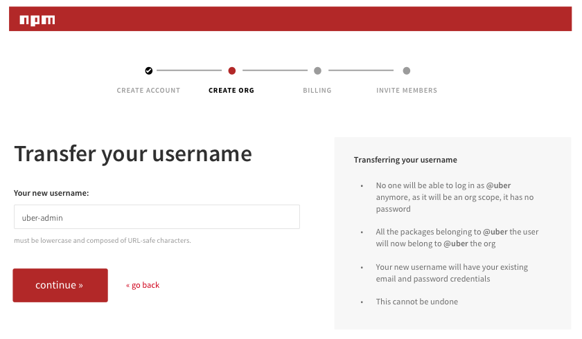

Responsive, interactive prototypes tested our proposed product purchase flow...

...but not before we whiteboarded the idea many times over...

...and over and over.
With millions of passionate open source contributors - it was't hard to find a stream of participants.
Continuous cycles of product design and user research helped iron out conversion flaws.